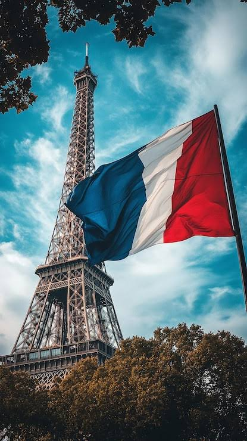
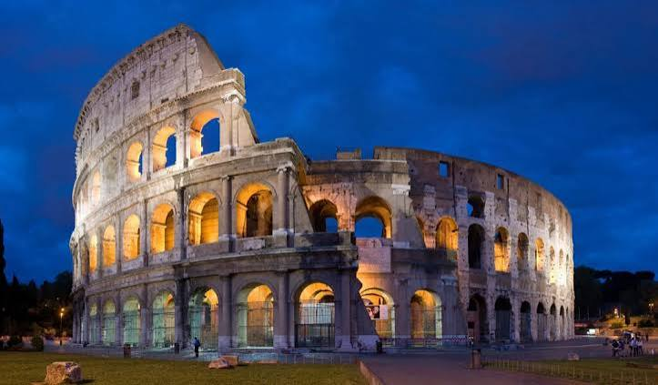

Bem-vindo à Mochilândia
O blog foi criado para quem quer explorar a Europa de mochilão. O espaço reúne dicas de pontos turísticos, curiosidades e orientações práticas para montar o seu roteiro. Veja abaixo os destinos em destaque.
Espanha
Se você quer conforto e um clima acolhedor, a Espanha tem ruas tranquilas, boa comida e gente receptiva.
França

Descubra cafés charmosos, ruas floridas e cantinhos românticos para quem busca tranquilidade.
Itália

Sinta o calor da Itália: massas fresquinhas, vilarejos encantadores e mesas cheias de conversa.